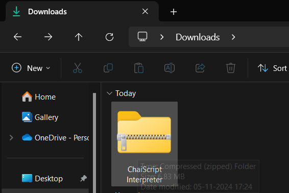
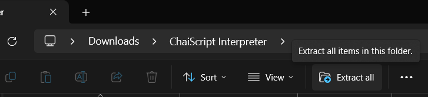
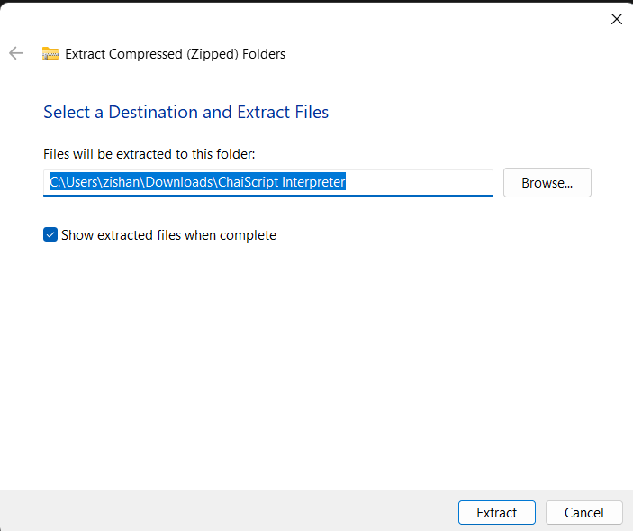
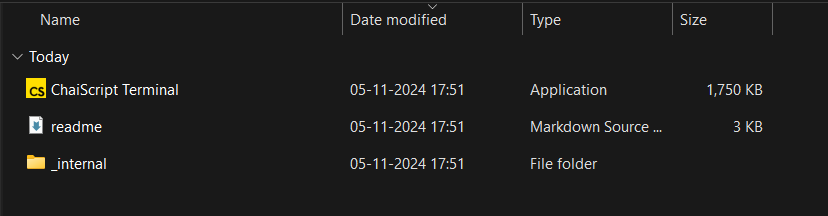
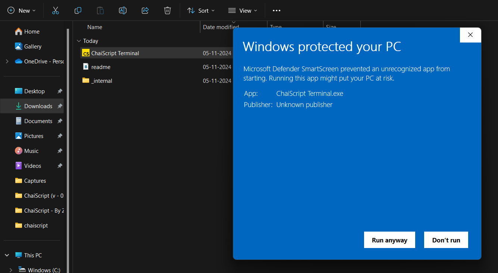
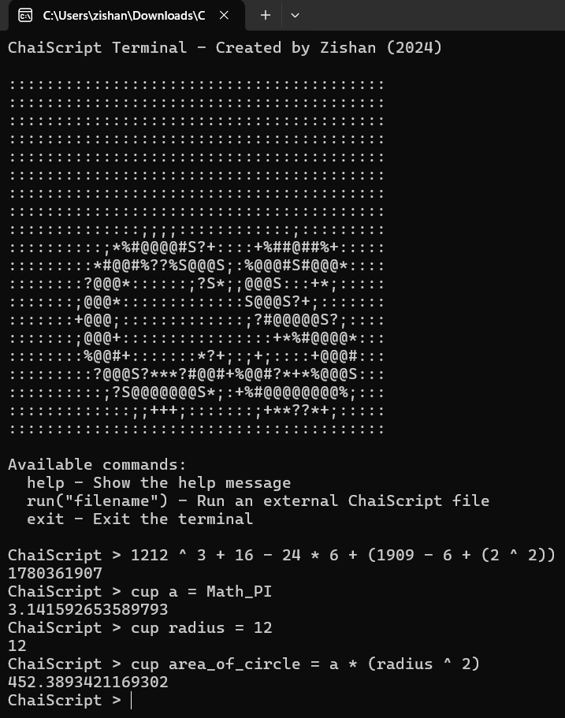
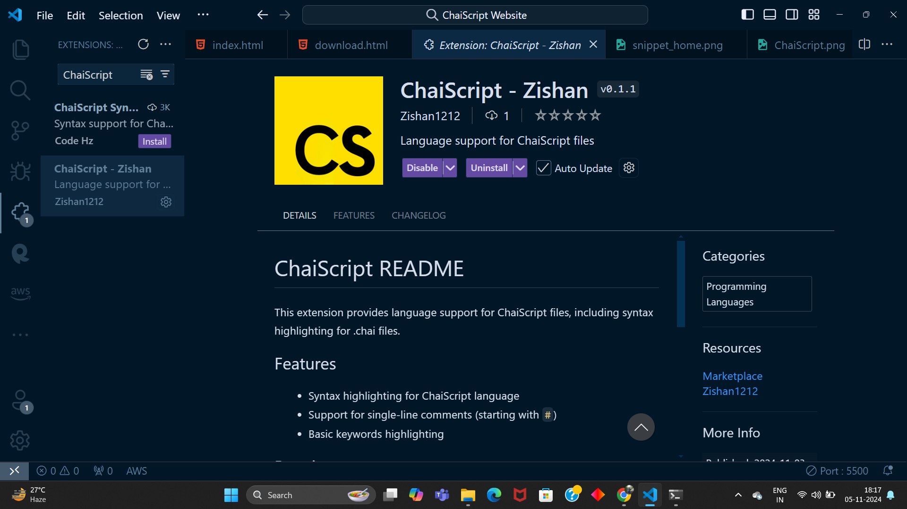
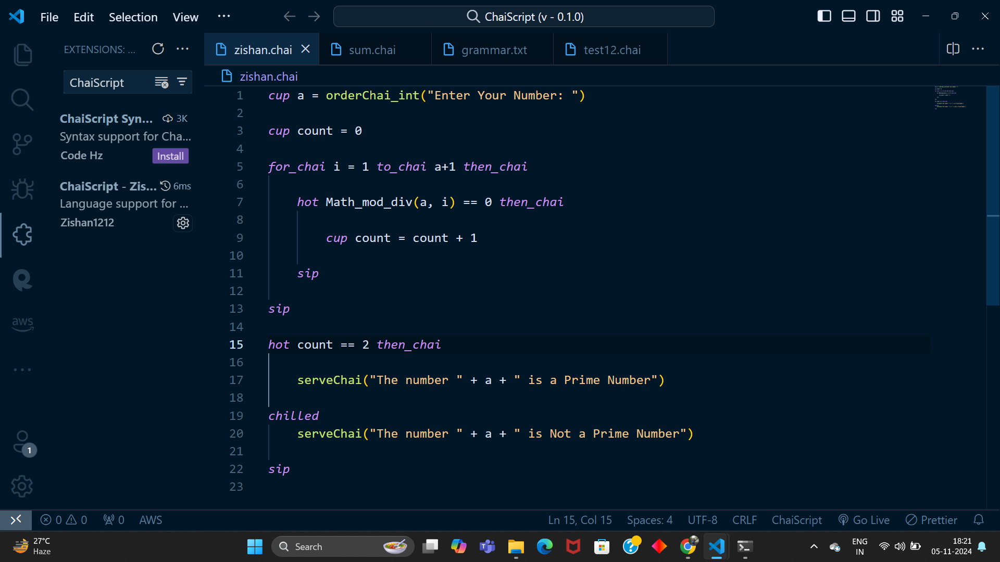

ChaiScript is an interpreted language best suited for learning coding and compatible with every OS.
Just like Python, you can run ChaiScript in both interactive and script modes.
How to Download ChaiScript
Step 2:
Locate the Downloaded zip folder of ChaiScript Interpreter

Double Click and look for unzip/ Extract All option and click on it to Extract

Now Choose your Favourable destination for Extracting the Folder

Step 3:
Double Click on the Extracted Folder and look for the ChaiScript Terminal.exe with ChaiScript logo and double click on it to code.This will be the interface after extracting the folder:

After clicking twice on ChaiScript Terminal You will see a window where a window will pop up and will inform u that the following application is unrecognisable by the OS and do you want to run it or not.
Just press the more info dropdown and select run anyway button

Step 4:
Congratulations Your Interpreter is ready to use and execute code
Open the ChaiScript Terminal to code directly in the command line or to use the Interactive mode.
Alternatively, create a .chai extension file in the ChaiScript Interpreter folder and open the ChaiScript Terminal.
Type run("fileName") to execute the script.

Feel free to experiment the language. Happy Coding with ChaiScript!!
Step 5 (Optional):
Download the VS Code extension for ChaiScript directly from the VS Code Marketplace by searching
ChaiScript - By Zishan, or use the button below.
The extension helps in syntax highlighting of ChaiScript language also provides auto-completion for the ChaiScript language
This is not necessary to download but it saves a lot of time for coding in script mode
Download VS Code Extension

